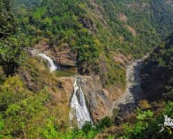
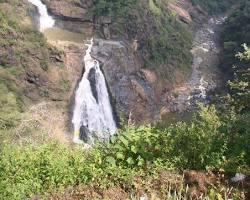
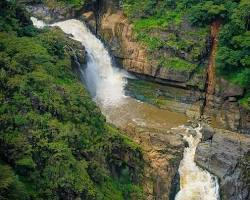
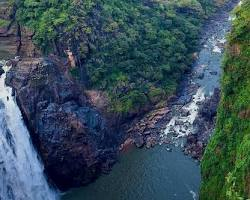
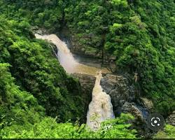

Magod Falls
Follow a river as it descends through a dramatic multi-tier cascade, surrounded by the forests and rocky landscapes of the Western Ghats.
Where the River Becomes a Cascade
Magod Falls is a scenic waterfall destination near Yellapur in Uttara Kannada district, Karnataka.
The waterfall is known for its cascading descent through a rugged forested setting, creating multiple visible stages as the water moves downhill.
The surrounding landscape belongs to the lush Western Ghats region, where seasonal rainfall, streams and dense vegetation shape the character of the waterfall.
Flow can change substantially during the year. During the monsoon and immediately afterwards, the river system becomes considerably more active, while drier periods can reveal more of the rocks and individual cascade sections.
Follow the Multi-Tier Descent
Explore the waterfall as a sequence of descending river stages.
Upper Flow
Water gathers and begins its descent through the rocky forest landscape.
A Dramatic Vertical Descent
Published descriptions of Magod Falls can vary depending on whether the measurement refers to the full waterfall system or an individual drop. Use the documented source figure for your chosen reference rather than treating different figures as interchangeable.
commonly reported
total descent
One Waterfall, Different Moods
Select a season to compare the expected flow, landscape and viewing character.

HIGH FLOWPowerful & Full
Heavy rainfall feeds the streams and creates the strongest visual flow across the cascade.
Expect wet conditions and slippery terrain.
Into the Western Ghats
Magod Falls sits within a landscape shaped by forest cover, monsoon rainfall, rocky terrain and seasonal streams.

Water Shapes the Landscape
The waterfall is part of a seasonal river system whose flow responds strongly to rainfall across the Western Ghats.
As the stream moves over the rocky terrain, changes in elevation produce the characteristic cascade pattern.
Find Magod Falls
Locate Magod Falls near Yellapur in Uttara Kannada, Karnataka.
Continue the Journey
Pair your waterfall visit with other landscapes and attractions around the Yellapur region.
Shivaganga Falls
Another waterfall experience associated with the forested Yellapur landscape.
Jenukallu Gudda
A Western Ghats landscape known for elevated views and forest scenery.
Unchalli Falls
A dramatic waterfall destination within the broader Uttara Kannada landscape.
Yellapur
A useful base for exploring waterfalls and forest landscapes in the region.
Magod Through the Lens
A visual journey through water, forest and landscape.



Research, Sources & Credits
Historical & Geographic Sources
- Karnataka tourism and destination information relating to Magod Falls and Yellapur.
- Government and regional geographic information for Uttara Kannada district.
- Published travel and geographic references for the Western Ghats waterfall region.
- Map data used through the embedded Google Maps interface.
Image Credits
- Magod Falls Hero: Add the exact source, photographer and license.
- Cascade: Add the exact source, photographer and license.
- Forest: Add the exact source, photographer and license.
- River Stream: Add the exact source, photographer and license.
- Yellapur Landscape: Add the exact source, photographer and license.
Waterfall measurements and seasonal descriptions can differ between published sources. The final page should retain the source-specific figure and attribution used for the implementation.